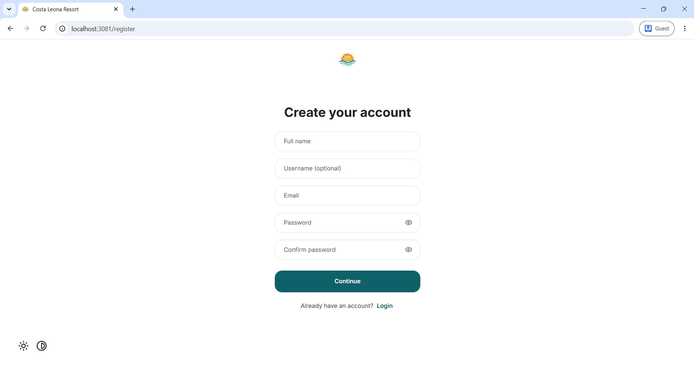
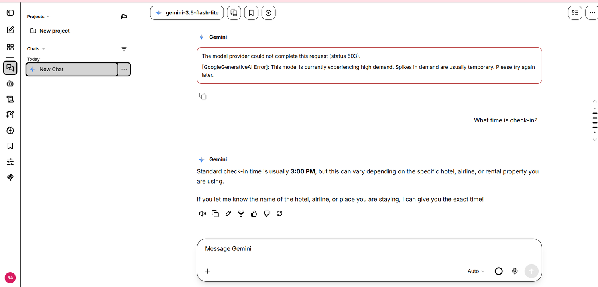
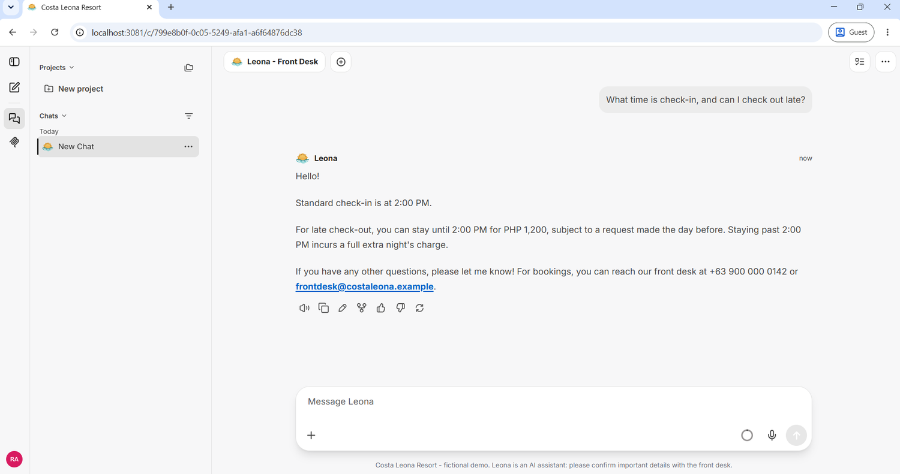
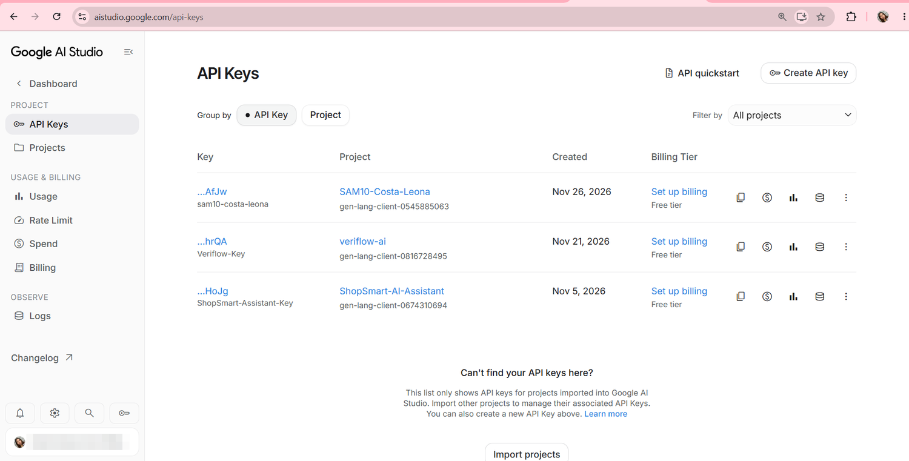
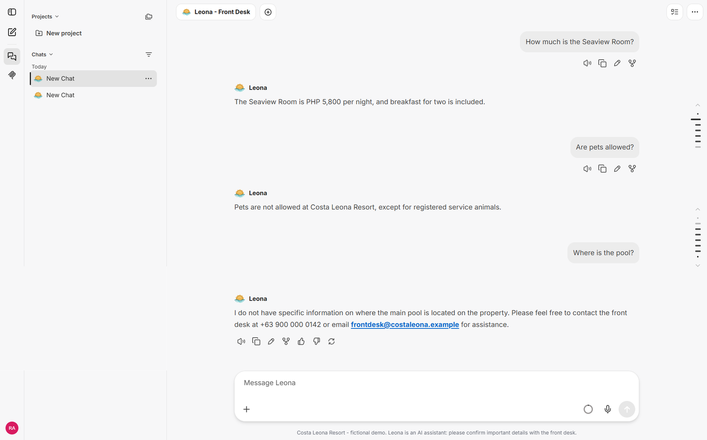
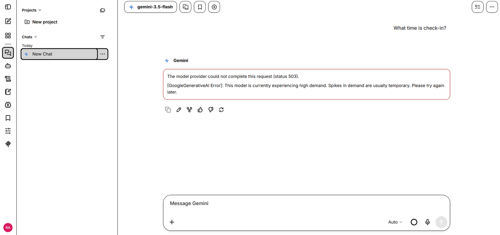

Base system and credit
| Item | Detail |
|---|---|
| Name / version | LibreChat (container image librechat-dev:latest pulled 2026-11-26; source v0.8.9 reviewed locally) |
| Source | https://github.com/danny-avila/LibreChat |
| Author | Danny Avila and the LibreChat contributors |
| Licence | MIT (LICENSE): reuse, modification and rebranding allowed with the copyright notice kept |
| What it did originally | A ChatGPT-style chat interface for many model providers, with user accounts |
The reskin: before and after







| Part | Original | Mine | Why |
|---|---|---|---|
| Name / branding | "LibreChat", feather logo, green theme | "Costa Leona Resort", sun-and-waves logo, teal theme, favicon, browser title | A stranger must not recognise the original |
| Data / content | None: it knows nothing about any business | Six invented resort documents (7.6 KB), stored in S3 | Data must be my own, with no real people |
| Wording / prompts | Generic assistant and welcome text | Persona "Leona", front-desk language, welcome text, footer disclaimer, strict "answer only from the knowledge" prompt | Domain language belongs to the resort world |
| Interface | Model picker, presets, agents, prompts, memories, web search | One fixed "Leona - Front Desk" assistant; other features hidden; self-sign-up closed on AWS | Fewer ways to misuse; simpler to operate |
| AWS services | None | S3 (content, backups), Parameter Store (secrets), CloudWatch, SNS, EventBridge + SSM | At least one integration beyond hosting |

Live URL: https://d3s6rxkesmrq3z.cloudfront.net. The model is Google Gemini (gemini-3.5-flash-lite, falling back to gemini-3.5-flash) through a free-tier key that belongs to its own Google project and can be revoked without affecting anything else.

Three test questions: two working, one failing
| # | Question | Answer (as returned) | Verdict |
|---|---|---|---|
| T1 | What time is check-in, and how do I get there from Manila? | "Standard check-in time is at 2:00 PM." plus the driving route, the bus route and the Friday/Saturday shuttle (PHP 700) | Correct: every fact matches the documents |
| T2 | Are pets allowed? | "Pets are not allowed at Costa Leona Resort, except for registered service animals." | Correct |
| T3 | We are 2 adults and 2 children aged 7 and 9. Which room should we book and how much per night? | Recommended the Lioness Family Villa (PHP 9,500) and said it "accommodates up to 4 adults and 1 child", without flagging that two children exceed that limit | Fails: unsafe recommendation; should have referred to the front desk |
Other honest observations: asked "Where is the pool?", Leona correctly says it has no information (a gap in my documents, not a wrong answer); asked about Christmas Day it said the resort is open because the front desk is open 24 hours, which the documents do not state (an over-inference); and the first live try hit HTTP 503 "high demand" from the Gemini service, outside my control. Raw outputs: live_test_questions_2026-11-26.md.




How good is it?
eval/run_eval.py, which asks each question and passes an answer only if it contains the required fact(s) in eval/questions.csv (for example "1,200" for the late check-out fee). Mix: 18 facts, 3 policies, 3 rules, 3 questions the documents cannot answer, 1 booking request, 2 safety prompts.Caveats: I wrote the questions, so they match my documents; a keyword match cannot judge subtle mistakes (T3 would pass a keyword test for "9,500"); 30 questions is a small sample. Data: Leona, baseline. A 5-question subset runs every hour on AWS.
System card
What it does
Leona answers guests' questions about Costa Leona Resort (fictional): room types and prices, check-in and check-out, amenities, house rules and directions. It reads six documents and replies in English or Filipino.
Who uses it, and who must not
Intended: prospective and current guests asking general questions.
Explicitly NOT for: medical, legal or emergency advice; making, changing or paying for bookings; any decision about an identifiable person (grading, ranking, eligibility, discipline); anyone about to share ID, card or health details in the chat.
Base system
LibreChat, github.com/danny-avila/LibreChat, Danny Avila and contributors, MIT licence. Originally a multi-provider chat interface with accounts.
What was changed
Identity, data, wording, interface and AWS services: see the reskin table above.
Data
- Source: written by me for this project; folder
knowledge/. - Size: six Markdown files, 7,612 bytes.
- Anything personal: No - all invented (the e-mail domain is
.example). - Sent to a third-party AI service: each question plus the six documents go to the Gemini API; only invented content is ever sent (free-tier terms may allow the provider to retain prompts, which is why no real data is used). Personal-data check: 2026-11-26 04:56 UTC: scanned 5 logged questions (the log kept after the incident trim), 0 possible personal-data hits.
How good it is
- The one number: 30/30 on my test set, via a keyword-scoring script.
- Cases: 30 (facts, policies, rules, unknowns, a booking request, safety).
- Gets wrong: T3, the family of two adults and two children sent to a villa limited to one child.
How it is served
- Runs on: EC2 t3.small, ap-southeast-1c, Docker; HTTPS via CloudFront.
- Called by:
d3s6rxkesmrq3z.cloudfront.net(browser); LibreChat calls the gateway at/v1/chat/completionswith a bearer token. - Model: Gemini
gemini-3.5-flash-lite, free tier. - If unavailable: 3 retries, then "Model provider error, please try again"; the failure counts toward an alarm (>5% in 15 min). Seen for real: HTTP 503.
Limitations and risks
- Cannot: book, change or pay; know anything outside the six documents; guarantee its arithmetic or capacity checks.
- Data risk: missing or stale facts give wrong or empty answers (the pool location is undocumented); model over-inference.
- Misuse: a guest could try to override its rules; the prompt forbids it but it is not a security boundary.
- Always check: prices, dates, capacity and policies with the front desk.
Operational summary
- Code: github.com/teptepphhh/costa-leona-resort
- Backups: MongoDB hourly to S3 (14 days); documents versioned and in Git.
- Healthy means: eight alarms OK and the hourly test at 80% or more.
- Contact: the operator on the declaration.